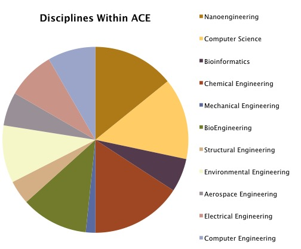

History
The Academic Connection of Engineers (ACE) was founded in 2014 as a non-profit academic organization, which aims to create a social and academically collaborative network among undergraduate engineering students at the University of California, San Diego. As the first of its kind, the Academic Connection of Engineers ambitiously yet effortlessly brought together engineers of every engineering discipline represented at UCSD. The unique and varied demographic inspires a diverse and realistic workspace for our undergraduates to combine their talents to approach academia and innovative project design.

We currently have a diverse group of 44 active undergraduate members of different academic levels representing all engineering disciplines within Jacobs School of Engineering at the University of California, San Diego.
With the initiative to assemble a tight-knit group of diverse engineers with innovative potential, ACE recruited members with the largest capacity for leadership. In order to insure the success of our world-class engineers, ACE focuses on three distinct areas: academic and social development, professional networking, and hands-on technical experience. Members of ACE participate in active group studying, providing the environment to build lasting relationships with other engineering students whilst maintaining a high level of academic achievement. Our members also attend professional development workshops and networking events with faculty, alumni, and industry representatives, which provide opportunities to establish connections for future career growth. Lastly, members are invited to participate in guided technical multidisciplinary engineering projects, creating a medium in which students can develop their leadership and team problem-solving skills.
In a very short span of time, ACE has developed a unique place in the sphere of engineering at UCSD and we are very excited to introduce new companies and different postgraduate opportunities to the talented engineering students within the Academic Connection of Engineers.